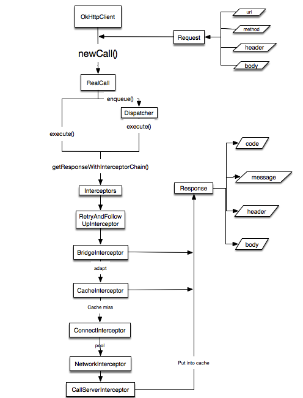

更新:
2017-09-09
2016-10-02
引言
本文主要分析OkHttp3的原理。。其有很多特点:
HTTP2/SPDY支持所有面向相同主机的请求共享一个Socket- 连接池减少请求时间，减少握手次数
- 基于
Headers的缓存策略 - 响应缓存避免重复的请求
- 线程队列，支持高效并发
本文基于OkHttp3.10.0-SNAPSHOT，需要弄懂一下几个问题
- 连接池如何维护
- 线程队列如何维护
- 缓存机制如何实现
- 重试机制是怎样的
用法
同步
异步
源码分析
OkHttpClient
OkHttpClient创建的时候，如果没有执行建造器，会使用默认构造器。这里用到了建造者模式，便于参数的配置。默认参数包括
- 支持协议: HTTP/2,HTTP1.1，默认没有支持(SPDY)
- 传输层协议: TLS(传输层安全协议SNI,ALPN)，未加密协议
- 代理选择器: 使用系统默认的代理选择器
- Socket工厂: 默认
- 主机名验证: 包括验证IP,域名及证书验证X509认证
- 证书信任验证: 防止证书认证攻击和中间人攻击
- 连接池
- dns
- 各种超时(连接，读，写: 10s
- 创建
RealCall
RealCall
- 创建
RealCall时会创建RetryAndFollowUpInterceptor
请求创建完成，接下来开始发起请求
同步请求execute
- 通过
Dispatcher下发请求。这里是同步的请求。
Dispatcher内部有个存储同步运行的Deque双端队列，队列默认大小是16
对于ArrayDeque来说,其内部如果容量不够，每次都会翻倍扩容，当大小超过Integer.MAX_VALUE时会抛出异常
因此到这里，也仅仅只是将请求放入到双端队列中，还没真正开始执行
- 添加拦截器，默认有重试拦截器，桥接拦截器，缓存拦截器，连接拦截器，网络拦截器，调用服务器拦截器。这里可以看得出，将网络请求细化成了很多小部分，便于对每部分的控制。然后开始执行请求。
拦截器链(RealInterceptorChain)
- 检查是否已经编码，如果已经编过码，检查连接的
url是否正确 - 创建新的连接链，并传入下一个拦截器。直到所有的拦截器执行完成，返回结果。
Dispatcher异步请求策略
- 主要由两个双端队列来维护，一个正在运行请求的队列，一个准备好请求的队列
- 如果队列的大小小于最大请求数并且队列请求中同一个主机的请求数小于最大请求数，添加到队列，否则添加到准备队列。默认最大请求数64，同一主机最大请求数5
- 使用线程队列执行每个运行中的请求，线程队列采用的
SynchronousQueue，控制多线程并发，其内部永远是个空状态，任务插入操作之后，必然等待任务取出操作，内部有个TransferQueue来讲任务插入或取出，确保操作线程安全
AsyncCall
内部的流程跟同步的流程一样
上述不管是同步，或者异步，执行完之后都会调用Dispatcher进行finish操作。来将任务移出队列。如果是异步，还会将准备队列的任务加入到运行队列，并交由线程池运行。至此，一次请求执行完成。这里面拦截器很重要，会在之后详细描述
拦截器(Interceptor)
RetryAndFollowUpInterceptor
关于重试次数，Chrome使用21次，Firefox,curl和wget使用20次,Safari使用16次，HTTP/1.0建议5次
最大重试20次
- 创建
StreamAllocation协调连接池，地址信息以及请求序列 - 如果请求取消了，那么释放当前
Socket资源 - 尝试发出网络请求，捕获这个过程的异常。
- 如果是
RouteException，尝试恢复 IOException异常
- 如果是
- 本次请求成功，释放资源
- 如果之前请求结果存在，获取该响应对应的请求
followUpRequest - 如果请求不存在，直接返回该响应
- 如果请求次数超过上限，抛出异常
- 如果请求体已经编过码，抛出异常
- 响应和请求不是相同的地址，创建新的
StreamAllocation - 保存该请求和该响应
- 尝试重新连接，判断客户端是否允许重试，无法再次发送请求,没有更多的路由可选择，以及各种协议异常。如果以上情况出现则，不会进行重试连接
- 获取响应码，根据各种响应码，构建出各自的请求，如果响应码是正常的，那么不会返回新的请求体。本次请求成功
因此重试的整体流程是
- 尝试连接->如果出现(Route/IOException)，判断能否重试->如果之前响应体存在，创造空内容的响应体，根据响应体的响应码，构建出请求，如果请求为空，那么本次请求成功，判断是否超过重试次数，请求能否发出，请求和响应地址是否一致
BridgeInterceptor
桥接客户端代码到网络代码
- 首先桥接请求头
- 接下来进入缓存拦截器
- 处理请求体压缩，使用
GzipSource
CacheInterceptor
- 获取内部缓存响应，默认使用
DiskLruCache - 根据响应体的头部信息，创建缓存策略(Date, Expires, Last-Modified, ETag, Age)，记录缓存策略
- 如果禁止网络请求，并且缓存无法满足，则返回失败信息
- 禁止网络请求，返回缓存
- 发起网络请求
- 既有网络响应又有缓存响应，更新缓存
- 只有网络请求，没有缓存，如果允许缓存，怎缓存网络响应，无法缓存
GET以外的响应.
ConnectInterceptor
向目标服务器打开一个连接
- 创建HttpCodec
- 连接服务器
- 找到可用的连接
- 将请求编码，
Http请求如何映射到Socket,使用HttpCodec
问题,如何找到可用的连连呢？
- 找出健康连接，何为健康连接,
socket没被关闭,socket输入输出关闭,Socket超时,BufferSource耗尽
- 如果连接已经存在，可以复用
- 不存在，根据地址从连接池获取一个连接
- 选择可用路由
- 如果没有找到可用连接,接着选择可用路由，并创建连接，连接加入新的请求信息
- 开始
TCP/TLS握手，更新路优库 - 将连接放入连接池
- 如果有多个相同地址的连接并发创建了，那么释放当前这个，获取别的
创建HttpCodec
- 如果
Http2不为空，直接返回Http2Codec Socket设置相应的超时，读写时间
CallServerInterceptor
向服务器发起网络请求
- 请求体的内容写到
Okio创建BufferedSink - 将缓冲区的数据放入
Socket，发出 - 接收响应
BufferSource - 更新
Socket状态,如果Socket没有新的Stream需要处理，或者没有空连接，关闭当前Socket
连接池的管理
ConnectionPool内部维护着一个双端队列，用于存储连接。还有一个黑名单路由表。还有一个线程池负责回收失效的连接
每当有新的连接要放入连接池的时候，会先触发回收连接操作
- 如果清理线程没有再运行，执行清理线程，然后将新的连接添加到连接池中
- 线程执行一个死循环，只有当无连接可清理时，线程退出,每次清除，线程会等待一段时间
- 寻找有多少连接在使用中，未使用的有多少
- 找出最长空闲连接，时间必须大于
Long.MIN_VALUE - 如果最长空闲时间大于最长存活时间或者空闲个数大于最大空闲个数，那么移除当前连接
- 有空闲连接，即将需要清理，返回需要等待的时间，等下一次清理
- 所有的连接都在用，返回最长的存活时间，让线程等待
- 最大空闲连接5个，最长存活时间5分钟
如何知道连接空闲与否?
- 通过获取连接流配置信息的弱引用。来统计当前的连接是否再用。
流程图

缓存
采用DiskLruCache来缓存请求和响应
写入缓存put
主要功能：
- 检查请求类型，如果不是
Get，不缓存 - 使用
Request的url作为key来缓存 - 写入缓存
更新缓存update
主要工作：
- 获取缓存快照编辑器
- 将网络响应写入